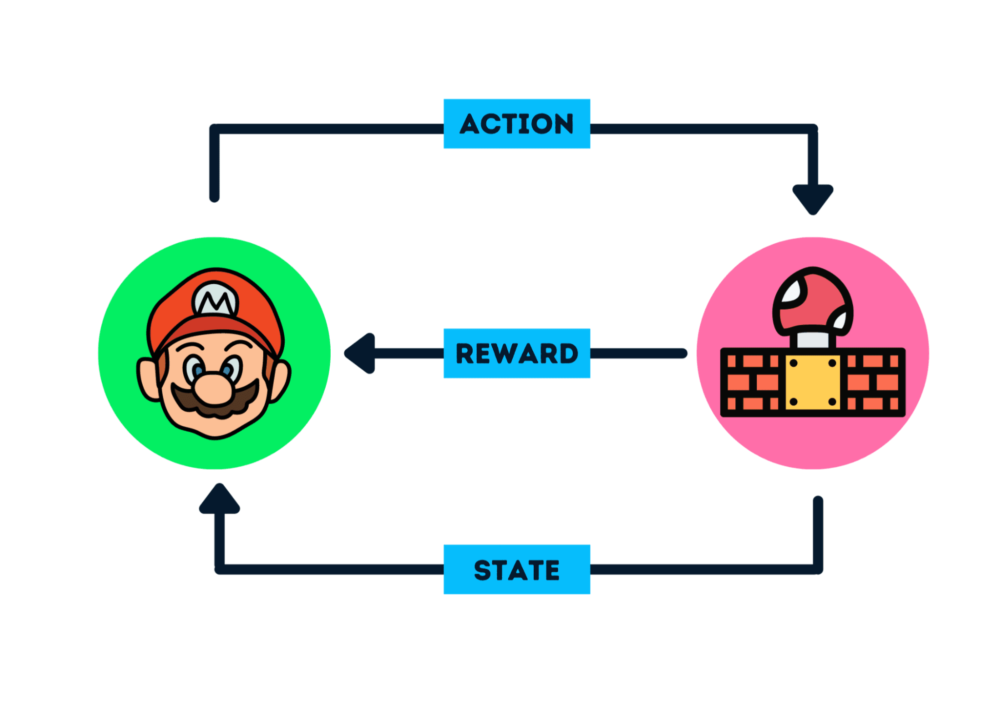
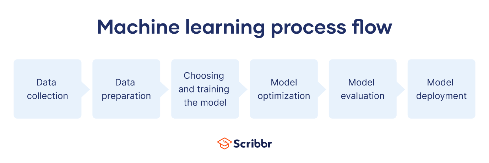

Machine Learning Basics
Machine Learning is a subset of Artificial Intelligence that focuses on enabling machines to learn from data and improve over time without being explicitly programmed. Let's delve into the foundational concepts of machine learning.
What is Machine Learning?
Machine Learning involves algorithms and statistical models that enable computers to perform tasks by learning from data rather than following explicit instructions:
- Data-Driven: Models learn patterns from historical data.
- Improvement Over Time: Performance enhances as more data is processed.
- Automation: Reduces the need for manual programming for complex tasks.
Types of Machine Learning
There are three main types of machine learning:
- Supervised Learning: Models learn from labeled data to make predictions.
- Unsupervised Learning: Models identify patterns and structures in unlabeled data.
- Reinforcement Learning: Models learn by interacting with an environment to achieve goals.
Supervised Learning
In supervised learning, the model is trained on a labeled dataset, which means that each training example is paired with an output label:
- Classification: Predicting categorical outcomes (e.g., spam detection).
- Regression: Predicting continuous outcomes (e.g., house price prediction).

Unsupervised Learning
Unsupervised learning deals with unlabeled data, aiming to find hidden patterns or intrinsic structures:
- Clustering: Grouping similar data points together (e.g., customer segmentation).
- Dimensionality Reduction: Reducing the number of variables (e.g., Principal Component Analysis).

Reinforcement Learning
In reinforcement learning, an agent learns by interacting with an environment and receiving rewards or penalties:
- Agent and Environment: The agent makes decisions, and the environment responds.
- Rewards and Punishments: Feedback used to learn optimal behaviors.
- Applications: Robotics, game playing (e.g., AlphaGo), autonomous vehicles.

Common Machine Learning Algorithms
Various algorithms are used in machine learning, including:
- Linear Regression: For predicting continuous values.
- Decision Trees: For classification and regression tasks.
- Support Vector Machines (SVM): For classification tasks.
- K-Means Clustering: For grouping similar data points.
- Neural Networks: For complex pattern recognition tasks.
Example: Simple Linear Regression in Python
Here's a basic example of implementing Linear Regression using Python's scikit-learn library:
import numpy as np
from sklearn.linear_model import LinearRegression
# Sample data
X = np.array([[1], [2], [3], [4], [5]]) # Features
y = np.array([3, 4, 2, 5, 6]) # Targets
# Create and train the model
model = LinearRegression()
model.fit(X, y)
# Make a prediction
new_data = np.array([[6]])
prediction = model.predict(new_data)
print("Predicted value:", prediction)
Steps in a Machine Learning Project
A typical machine learning project involves:
- Data Collection: Gathering relevant data.
- Data Preprocessing: Cleaning and preparing data for analysis.
- Model Selection: Choosing appropriate algorithms.
- Training: Feeding data to the model to learn patterns.
- Evaluation: Assessing model performance using metrics.
- Deployment: Integrating the model into applications.

Challenges and Considerations
Machine learning projects often face challenges:
- Data Quality: Garbage in, garbage out; the model's performance depends on data quality.
- Overfitting: Models may perform well on training data but poorly on new data.
- Bias and Fairness: Ensuring models do not perpetuate or amplify biases.
- Interpretability: Understanding how models make decisions, especially in critical applications.
- Computational Resources: Some models require significant processing power.
Fun Facts About Machine Learning
- Origin of the Term: The term "machine learning" was coined by Arthur Samuel in 1959.
- Deep Blue: In 1997, IBM's Deep Blue used machine learning to defeat chess champion Garry Kasparov.
- Netflix Prize: In 2009, Netflix awarded $1 million to a team that improved its recommendation algorithm by 10%.
Test Your Understanding: Machine Learning Basics Quiz
Try answering these questions to see how much you've learned about machine learning: